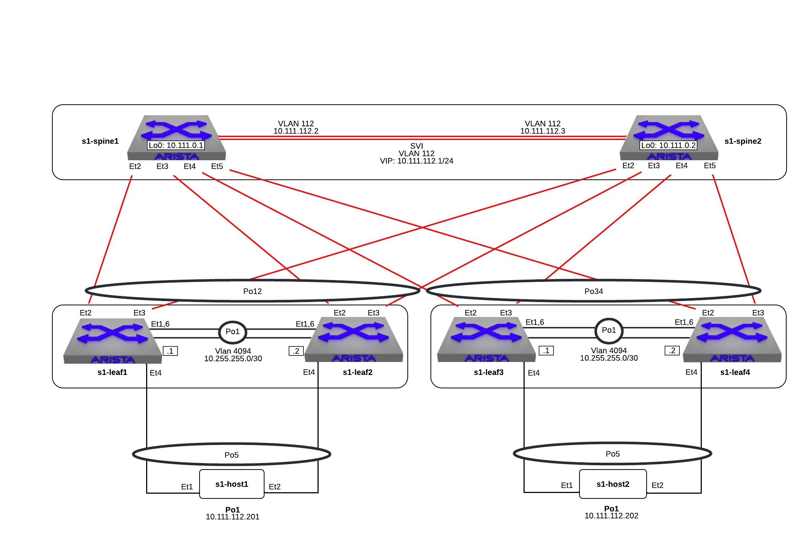

Layer 2 Leaf-Spine

-
Log into the LabAccess jumpserver to prepare the lab environment:
- Type
l2lsat the prompt. The script will configure the datacenter with the exception of s1-leaf4.
Info
Did you know the "l2ls" script is composed of Python code that uses the CloudVision REST API to automate the provisioning of CVP Configlets? The configlets that are configured via the REST API are
L2LS_s1-spine1,L2LS_s1-spine2,L2LS_s1-leaf1,L2LS_s1-leaf2,L2LS_s1-leaf3.Note
The manually-entered commands below that are part of this lab are equivalent to
L2LS_s1-leaf4_complete. - Type
-
Prior to configuration, verify the current operational status of the environment.
Note
Full commands will be typed for reference in lab steps, but commands in EOS can be shortened or tab-completed at the user's discretion.
-
On s1-leaf3, verify EOS MLAG operational details. Since configuration is not complete yet, it will not be up.
s1-leaf3#show mlag MLAG Configuration: domain-id : MLAG local-interface : Vlan4094 peer-address : 10.255.255.2 peer-link : Port-Channel1 peer-config : MLAG Status: state : Inactive negotiation status : Connecting peer-link status : Lowerlayerdown local-int status : Lowerlayerdown system-id : 00:00:00:00:00:00 dual-primary detection : Disabled dual-primary interface errdisabled : False MLAG Ports: Disabled : 2 Configured : 0 Inactive : 0 Active-partial : 0 Active-full : 0 s1-leaf3#show mlag interfaces local/remote mlag desc state local remote status ----- -------------------------------- ---------- ------- -------- ------------ 5 MLAG Downlink - s1-host2 disabled Po5 - up/- 34 MLAG Uplink - s1-spine1 and s1 disabled Po34 - up/-
-
-
Configure the MLAG domain on s1-leaf4 using the following steps.
-
Configure the layer 2 VLANs for host connectivity.
Note
Arista EOS utilizes the Industry-Standard CLI. When entering configuration commands, be sure to first type
configureto enter configuration mode. -
Configure the layer 2 VLANs MLAG communication between the peer switches.
Note
Arista best practices leverage a
trunk groupto limit layer 2 forwarding of the MLAG peering VLAN to only the peer-link, which we will see later. This is because we also recommend disabling STP operation on the MLAG peering VLAN to ensure MLAG adjacency can form immediately as EOS comes up without waiting for the STP learning process to complete. -
Configure the MLAG Peer-link Port-Channel on s1-leaf4 to connect to s1-leaf3.
Note
Here, the
trunk groupapplied to the MLAG peering VLAN is applied to the peer-link to ensure the MLAG VLAN is only forwarded on this link. Note we also can do interface ranges and groups when applying similar configurations as shown. Member interfaces of a port-channel will inherit all configuration of the parent so there is no need to apply things like switchport commands to the individual interfaces. -
Verify Port-Channel and L2 forwarding status.
Note
In EOS, any command can be run from any CLI mode. Here we can run show commands directly from interface configuration mode.
s1-leaf4(config-if-Et1,6)#show interfaces status Port Name Status Vlan Duplex Speed Type Flags Encapsulation Et1 MLAG Peer-link - s1-leaf3 connected in Po1 full 1G EbraTestPhyPort Et2 connected 1 full 1G EbraTestPhyPort Et3 connected 1 full 1G EbraTestPhyPort Et4 connected 1 full 1G EbraTestPhyPort Et6 MLAG Peer-link - s1-leaf3 connected in Po1 full 1G EbraTestPhyPort Ma0 connected routed a-full a-1G 10/100/1000 Po1 MLAG Peer-link - s1-leaf3 connected trunk full 2G N/A s1-leaf4(config-if-Et1,6)#show port-channel dense Flags -------------------------- ----------------------------- ------------------------- a - LACP Active p - LACP Passive * - static fallback F - Fallback enabled f - Fallback configured ^ - individual fallback U - In Use D - Down + - In-Sync - - Out-of-Sync i - incompatible with agg P - bundled in Po s - suspended G - Aggregable I - Individual S - ShortTimeout w - wait for agg E - Inactive. The number of configured port channels exceeds the config limit M - Exceeds maximum weight Number of channels in use: 1 Number of aggregators: 1 Port-Channel Protocol Ports ------------------ -------------- ------------------ Po1(U) LACP(a) Et1(PG+) Et6(PG+) s1-leaf4(config-if-Et1,6)#show interfaces trunk Port Mode Status Native vlan Po1 trunk trunking 1 Port Vlans allowed Po1 All Port Vlans allowed and active in management domain Po1 1,112,134,4094 Port Vlans in spanning tree forwarding state Po1 1,112,134,4094 -
Configure the MLAG Layer 3 peering network.
Note
The MLAG VLAN and peering network are used only for communication between the peer switches. As such, the IP network that is used does not need to be unique or routable (though it can be if customers choose). In the lab, we re-use 10.255.255.252/30 on all MLAG pairs.
-
Verify layer 3 connectivity between the peer switches on the MLAG VLAN.
s1-leaf4(config-if-Vl4094)#ping 10.255.255.1 PING 10.255.255.253 (10.255.255.1) 72(100) bytes of data. 80 bytes from 10.255.255.1: icmp_seq=1 ttl=64 time=7.33 ms 80 bytes from 10.255.255.1: icmp_seq=2 ttl=64 time=6.82 ms 80 bytes from 10.255.255.1: icmp_seq=3 ttl=64 time=5.65 ms 80 bytes from 10.255.255.1: icmp_seq=4 ttl=64 time=7.16 ms 80 bytes from 10.255.255.1: icmp_seq=5 ttl=64 time=7.53 ms --- 10.255.255.1 ping statistics --- 5 packets transmitted, 5 received, 0% packet loss, time 29ms rtt min/avg/max/mdev = 5.659/6.903/7.530/0.663 ms, ipg/ewma 7.281/7.135 ms -
Define the MLAG Domain parameters to establish the peering.
Note
Similar to the peering network, the MLAG
domain-idcan be re-used across pairs as it is a locally-significant value. The other values describe the connectivity between the peer switches. :::: -
Verify the MLAG relationship between s1-leaf3 and s1-leaf4.
s1-leaf4(config-mlag)#show mlag MLAG Configuration: domain-id : MLAG local-interface : Vlan4094 peer-address : 10.255.255.1 peer-link : Port-Channel1 peer-config : consistent MLAG Status: state : Active negotiation status : Connected peer-link status : Up local-int status : Up system-id : 02:1c:73:c0:c6:14 dual-primary detection : Disabled dual-primary interface errdisabled : False MLAG Ports: Disabled : 0 Configured : 0 Inactive : 0 Active-partial : 0 Active-full : 0
-
-
With the MLAG domain established, configure the MLAG uplink to the spines on s1-leaf4.
-
Configure a Port-Channel and member interfaces on s1-leaf4 connecting to s1-spine1 and s1-spine2.
Note
What matters is that the
mlagID of the Port-Channel matches between the MLAG peers. ThePort-ChannelID is only locally-significant to the switch, but best practice is to match allmlagandPort-ChannelIDs. :::: -
Verify the MLAG Port-Channel is negotiated between the peers and all interfaces are aggregated.
s1-leaf4(config-if-Et3)#show mlag | begin Ports MLAG Ports: Disabled : 0 Configured : 0 Inactive : 0 Active-partial : 0 Active-full : 1 s1-leaf4(config-if-Et3)#show mlag interfaces local/remote mlag desc state local remote status ---------- ------------------------------------ ----------------- ----------- ------------ ------------ 34 MLAG Uplink - s1-spine1 and s1 active-full Po34 Po34 up/up s1-leaf4(config-if-Et3)#show port-channel dense Flags -------------------------- ----------------------------- ------------------------- a - LACP Active p - LACP Passive * - static fallback F - Fallback enabled f - Fallback configured ^ - individual fallback U - In Use D - Down + - In-Sync - - Out-of-Sync i - incompatible with agg P - bundled in Po s - suspended G - Aggregable I - Individual S - ShortTimeout w - wait for agg E - Inactive. The number of configured port channels exceeds the config limit M - Exceeds maximum weight Number of channels in use: 2 Number of aggregators: 2 Port-Channel Protocol Ports ------------------ -------------- ---------------------------------- Po1(U) LACP(a) Et1(PG+) Et6(PG+) Po34(U) LACP(a) Et2(PG+) Et3(PG+) PEt2(P) PEt3(P)
-
-
Now that uplinks to the spines are established, configure downstream host connectivity on s1-leaf4.
-
Configure a Port-Channel and member interface on s1-leaf4 connecting to s1-host2.
-
Verify the host-facing MLAG Port-Channel is negotiated between the peers and all interfaces are aggregated.
s1-leaf4(config-if-Et4)#show mlag interfaces 5 local/remote mlag desc state local remote status ---------- ------------------------------ ----------------- ----------- ------------ ------------ 5 MLAG Downlink - s1-host2 active-full Po5 Po5 up/up s1-leaf4(config-if-Et4)#show port-channel 5 Port Channel Port-Channel5: Active Ports: Ethernet4 PeerEthernet4
-
-
Validate connectivity from s1-host1 to s1-host2 by logging into s1-host1 through the menu (option 5 in ssh menu) or using screen.
> s1-host1#ping 10.111.112.202 > PING 10.111.112.202 (10.111.112.202) 72(100) bytes of data. > 80 bytes from 10.111.112.202: icmp_seq=1 ttl=64 time=47.7 ms > 80 bytes from 10.111.112.202: icmp_seq=2 ttl=64 time=38.8 ms > 80 bytes from 10.111.112.202: icmp_seq=3 ttl=64 time=30.7 ms > 80 bytes from 10.111.112.202: icmp_seq=4 ttl=64 time=21.7 ms > 80 bytes from 10.111.112.202: icmp_seq=5 ttl=64 time=19.1 ms > > --- 10.111.112.202 ping statistics --- > 5 packets transmitted, 5 received, 0% packet loss, time 41ms > rtt min/avg/max/mdev = 19.128/31.636/47.743/10.637 ms, pipe 5, ipg/ewma 10.272/38.948 ms -
Verify layer 2 forwarding information on the spines.
> s1-spine1#show mac address-table vlan 112 > Mac Address Table > ------------------------------------------------------------------ > > Vlan Mac Address Type Ports Moves Last Move > ---- ----------- ---- ----- ----- --------- > 112 001c.73c0.c611 STATIC Po1 > 112 001c.73c0.c616 DYNAMIC Po12 1 0:01:08 ago > 112 001c.73c0.c617 DYNAMIC Po34 1 0:03:02 ago > Total Mac Addresses for this criterion: 3 > > Multicast Mac Address Table > ------------------------------------------------------------------ > > Vlan Mac Address Type Ports > ---- ----------- ---- ----- > Total Mac Addresses for this criterion: 0 -
Explore other command outputs related to MLAG Operation on s1-leaf4.
-
Verify MLAG peer roles and detailed state information.
Note
The
show mlag detailoutput contains a wealth of information. Notice that while there is aprimaryandsecondaryrole for the MLAG peers, it is not a configurable value. The peers automatically negotiate this between themselves. The MLAG primary device is responsible for all STP processing for both peers. TheReload delayvalue is also very important in upgrade and maintenance scenarios.s1-leaf4#show mlag detail MLAG Configuration: domain-id : MLAG local-interface : Vlan4094 peer-address : 10.255.255.1 peer-link : Port-Channel1 peer-config : consistent MLAG Status: state : Active negotiation status : Connected peer-link status : Up local-int status : Up system-id : 02:1c:73:c0:c6:14 dual-primary detection : Disabled dual-primary interface errdisabled : False MLAG Ports: Disabled : 0 Configured : 0 Inactive : 0 Active-partial : 0 Active-full : 2 MLAG Detailed Status: State : secondary Peer State : primary State changes : 2 Last state change time : 0:42:12 ago Hardware ready : True Failover : False Failover Cause(s) : Unknown Last failover change time : never Secondary from failover : False Peer MAC address : 00:1c:73:c0:c6:14 Peer MAC routing supported : False Reload delay : 300 seconds Non-MLAG reload delay : 300 seconds Ports errdisabled : False Lacp standby : False Configured heartbeat interval : 4000 ms Effective heartbeat interval : 4000 ms Heartbeat timeout : 60000 ms Last heartbeat timeout : never Heartbeat timeouts since reboot : 0 UDP heartbeat alive : True Heartbeats sent/received : 633/635 Peer monotonic clock offset : 0.000013 seconds Agent should be running : True P2p mount state changes : 1 Fast MAC redirection enabled : False -
Configure a VLAN on s1-leaf4 only to see how MLAG tracks consistency between the peer switches.
Note
It is critical that the MLAG peers be consistent to ensure proper forwarding and operation. The
show mlag config-sanitycommand helps to track values that are not consistent. These values should be rectified in production environments unless guided otherwise by an Arista SE.s1-leaf4(config)#vlan 999 s1-leaf4(config-vlan-999)#name TEMP s1-leaf4(config-vlan-999)#show mlag config-sanity No per interface configuration inconsistencies found. Global configuration inconsistencies: Feature Attribute Local value Peer value -------------- --------------------------- ----------------- ---------- bridging admin-state vlan 999 active - bridging mac-learning vlan 999 True - s1-leaf4(config-vlan-999)#no vlan 999 s1-leaf4(config)#show mlag config-sanity No global configuration inconsistencies found. No per interface configuration inconsistencies found.
-
LAB COMPLETE!